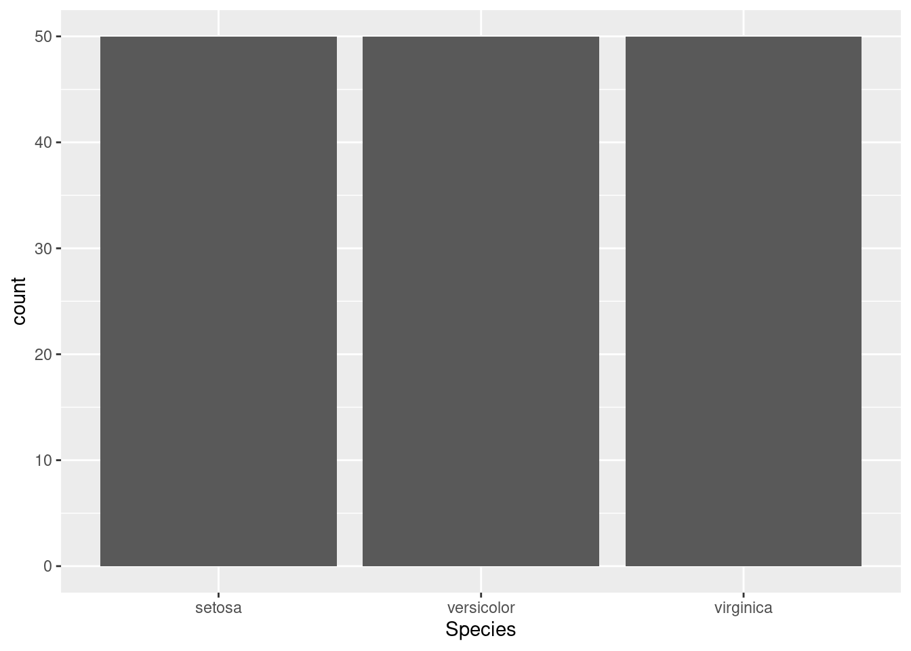

Overview
jrrosell is a personal R package for Jordi Rosell.
Installation
# To get the last r-universe release, use:
install.packages("jrrosell", repos = c("https://jrosell.r-universe.dev", "https://cloud.r-project.org"))
# For the last development version, use:
pak::pak("jrosell/jrrosell")Usage
For example, you can use it for theming ggplot plots.
Instead of:

You get:
library(ggplot2)
library(jrrosell)
theme_set_roboto_darkblue()
ggplot(iris, aes(Species)) +
geom_bar()
Are you looking for other functions? Check the reference here.
Getting help
For questions, discussions or bugs, please open an issue on GitHub.